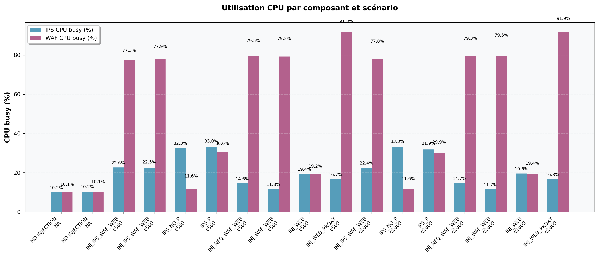
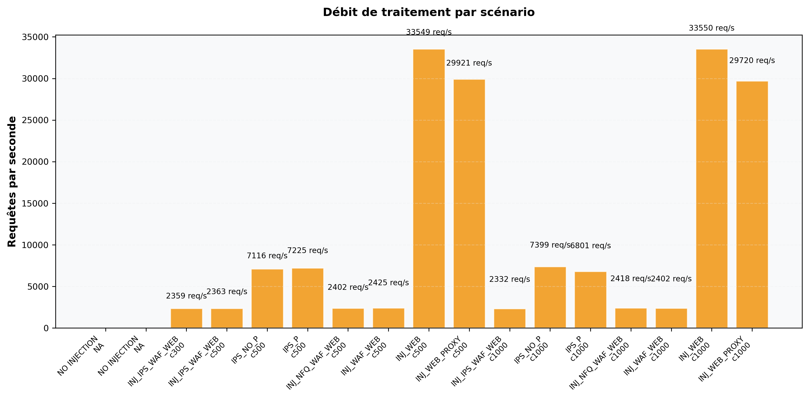
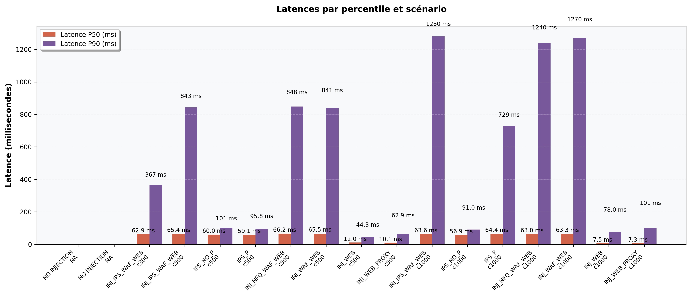

📋 Vue d'ensemble combinée
Analyse comparative complète de tous les indicateurs

Généré le: 2025-09-12T09:02:57.529481Z (UTC)
Analyse automatisée des métriques de performance pour différents scénarios d'architecture réseau
| Scénario | Description |
|---|---|
| INJ_IPS_WAF_WEB | Injector → IPS (Suricata) actif → WAF (proxy Apache avec ModSecurity) actif → Backend web. Test complet avec IDS/IPS et WAF inline. |
| INJ_IPS_WEB_NO_PROXY | Injector → IPS actif → connexion directe vers le Backend (pas de proxy WAF). Permet mesurer l'impact de l'IPS seul. |
| INJ_IPS_WEB_PROXY | Injector → IPS actif → WAF machine en mode proxy (sans ModSecurity activé) → Backend. Mesure l'overhead du proxy seul avec IPS. |
| INJ_NFQ_WAF_WEB | Injector → NFQUEUE présent mais Suricata pas en mode bloquant (ou acceptant) → WAF actif → Backend. Test du cas où NFQUEUE est installé mais trafic accepté. |
| INJ_WAF_WEB | Injector → Pas d'IPS → WAF (proxy + ModSecurity) actif → Backend. Mesure l'impact du WAF seul. |
| INJ_WEB | Injector → Pas d'IPS → Pas de proxy (accès direct au Backend). Mesures baseline sans WAF ni proxy ni IPS. |
| INJ_WEB_PROXY | Injector → Pas d'IPS → Proxy (WAF machine en tant que reverse-proxy, ModSecurity désactivé) → Backend. Test proxy sans fonctionnalités WAF. |
| NO INJECTION | Tests sans trafic d'injection (contrôles ou mesures à vide). |
| scenario | scenario_desc | run | concurrency | path | avg_busy_ips | avg_idle_ips | samples_ips | avg_busy_waf | avg_idle_waf | samples_waf | requests_per_sec | p50 | p75 | p90 | p99 | socket_errors | transfer_per_sec | wrk_file |
|---|---|---|---|---|---|---|---|---|---|---|---|---|---|---|---|---|---|---|
| INJ_IPS_WAF_WEB | Injector → IPS (Suricata) actif → WAF (proxy Apache avec ModSecurity) actif → Backend web. Test complet avec IDS/IPS et WAF inline. | run 1 | 500.0 | C:\Users\donfa\OneDrive\Desktop\BOULOT\RESUTATS TEST\INJ_IPS_WAF_WEB\run 1 | 22.51 | 77.49 | 2010 | 77.87 | 22.13 | 2090 | 2363.00 | 0.065 | 0.528 | 0.843 | 1.030 | connect 0, read 73477, write 0, timeout 311 | 572.29 | C:\Users\donfa\OneDrive\Desktop\BOULOT\RESUTATS TEST\INJ_IPS_WAF_WEB\run 1\wrk_via_waf_c500_t4_200s_run1.txt |
| INJ_IPS_WAF_WEB | Injector → IPS (Suricata) actif → WAF (proxy Apache avec ModSecurity) actif → Backend web. Test complet avec IDS/IPS et WAF inline. | run 2 | 1000.0 | C:\Users\donfa\OneDrive\Desktop\BOULOT\RESUTATS TEST\INJ_IPS_WAF_WEB\run 2 | 22.44 | 77.56 | 398 | 77.81 | 22.19 | 2090 | 2332.01 | 0.064 | 0.657 | 1.280 | 1.510 | connect 0, read 72944, write 13, timeout 1000 | 564.78 | C:\Users\donfa\OneDrive\Desktop\BOULOT\RESUTATS TEST\INJ_IPS_WAF_WEB\run 2\wrk_via_waf_c1000_t4_200s_run1.txt |
| INJ_IPS_WAF_WEB | Injector → IPS (Suricata) actif → WAF (proxy Apache avec ModSecurity) actif → Backend web. Test complet avec IDS/IPS et WAF inline. | run 3 | 300.0 | C:\Users\donfa\OneDrive\Desktop\BOULOT\RESUTATS TEST\INJ_IPS_WAF_WEB\run 3 | 22.63 | 77.37 | 2010 | 77.29 | 22.71 | 2090 | 2359.05 | 0.063 | 0.210 | 0.367 | 0.473 | connect 0, read 73605, write 0, timeout 0 | 571.33 | C:\Users\donfa\OneDrive\Desktop\BOULOT\RESUTATS TEST\INJ_IPS_WAF_WEB\run 3\wrk_via_waf_c300_t4_200s_run1.txt |
| INJ_IPS_WEB_NO_PROXY | Injector → IPS actif → connexion directe vers le Backend (pas de proxy WAF). Permet mesurer l'impact de l'IPS seul. | run 1 | 500.0 | C:\Users\donfa\OneDrive\Desktop\BOULOT\RESUTATS TEST\INJ_IPS_WEB_NO_PROXY\run 1 | 32.33 | 67.67 | 2010 | 11.59 | 88.41 | 2090 | 7116.44 | 0.060 | 0.075 | 0.101 | 0.888 | connect 0, read 13066, write 0, timeout 157 | 1720.32 | C:\Users\donfa\OneDrive\Desktop\BOULOT\RESUTATS TEST\INJ_IPS_WEB_NO_PROXY\run 1\wrk_via_waf_c500_t4_200s_run1.txt |
| INJ_IPS_WEB_NO_PROXY | Injector → IPS actif → connexion directe vers le Backend (pas de proxy WAF). Permet mesurer l'impact de l'IPS seul. | run 2 | 1000.0 | C:\Users\donfa\OneDrive\Desktop\BOULOT\RESUTATS TEST\INJ_IPS_WEB_NO_PROXY\run 2 | 33.28 | 66.72 | 2010 | 11.62 | 88.38 | 2090 | 7399.37 | 0.057 | 0.072 | 0.091 | 0.797 | connect 0, read 17950, write 1, timeout 22966 | 1792.00 | C:\Users\donfa\OneDrive\Desktop\BOULOT\RESUTATS TEST\INJ_IPS_WEB_NO_PROXY\run 2\wrk_via_waf_c1000_t4_200s_run1.txt |
| INJ_IPS_WEB_PROXY | Injector → IPS actif → WAF machine en mode proxy (sans ModSecurity activé) → Backend. Mesure l'overhead du proxy seul avec IPS. | run 1 | 500.0 | C:\Users\donfa\OneDrive\Desktop\BOULOT\RESUTATS TEST\INJ_IPS_WEB_PROXY\run 1 | 32.96 | 67.04 | 2010 | 30.65 | 69.35 | 2090 | 7225.45 | 0.059 | 0.073 | 0.096 | 0.652 | connect 0, read 44002, write 0, timeout 63 | 1751.04 | C:\Users\donfa\OneDrive\Desktop\BOULOT\RESUTATS TEST\INJ_IPS_WEB_PROXY\run 1\wrk_via_waf_c500_t4_200s_run1.txt |
| INJ_IPS_WEB_PROXY | Injector → IPS actif → WAF machine en mode proxy (sans ModSecurity activé) → Backend. Mesure l'overhead du proxy seul avec IPS. | run 2 | 1000.0 | C:\Users\donfa\OneDrive\Desktop\BOULOT\RESUTATS TEST\INJ_IPS_WEB_PROXY\run 2 | 31.86 | 68.14 | 2010 | 29.91 | 70.09 | 2090 | 6800.98 | 0.064 | 0.089 | 0.729 | 1.620 | connect 0, read 50828, write 0, timeout 17899 | 1648.64 | C:\Users\donfa\OneDrive\Desktop\BOULOT\RESUTATS TEST\INJ_IPS_WEB_PROXY\run 2\wrk_via_waf_c1000_t4_200s_run1.txt |
| INJ_NFQ_WAF_WEB | Injector → NFQUEUE présent mais Suricata pas en mode bloquant (ou acceptant) → WAF actif → Backend. Test du cas où NFQUEUE est installé mais trafic accepté. | run 1 | 500.0 | C:\Users\donfa\OneDrive\Desktop\BOULOT\RESUTATS TEST\INJ_NFQ_WAF_WEB\run 1 | 14.56 | 85.44 | 1990 | 79.46 | 20.54 | 2090 | 2401.52 | 0.066 | 0.540 | 0.848 | 1.030 | connect 0, read 75214, write 0, timeout 23 | 581.62 | C:\Users\donfa\OneDrive\Desktop\BOULOT\RESUTATS TEST\INJ_NFQ_WAF_WEB\run 1\wrk_via_waf_c500_t4_200s_run1.txt |
| INJ_NFQ_WAF_WEB | Injector → NFQUEUE présent mais Suricata pas en mode bloquant (ou acceptant) → WAF actif → Backend. Test du cas où NFQUEUE est installé mais trafic accepté. | run 2 | 1000.0 | C:\Users\donfa\OneDrive\Desktop\BOULOT\RESUTATS TEST\INJ_NFQ_WAF_WEB\run 2 | 14.72 | 85.28 | 1990 | 79.30 | 20.70 | 5658 | 2417.50 | 0.063 | 0.674 | 1.240 | 1.470 | connect 0, read 76764, write 9, timeout 474 | 585.49 | C:\Users\donfa\OneDrive\Desktop\BOULOT\RESUTATS TEST\INJ_NFQ_WAF_WEB\run 2\wrk_via_waf_c1000_t4_200s_run1.txt |
| INJ_WAF_WEB | Injector → Pas d'IPS → WAF (proxy + ModSecurity) actif → Backend. Mesure l'impact du WAF seul. | run 1 | 500.0 | C:\Users\donfa\OneDrive\Desktop\BOULOT\RESUTATS TEST\INJ_WAF_WEB\run 1 | 11.75 | 88.25 | 1990 | 79.20 | 20.80 | 5630 | 2424.54 | 0.066 | 0.541 | 0.841 | 1.040 | connect 0, read 75709, write 0, timeout 5 | 587.19 | C:\Users\donfa\OneDrive\Desktop\BOULOT\RESUTATS TEST\INJ_WAF_WEB\run 1\wrk_via_waf_c500_t4_200s_run1.txt |
| INJ_WAF_WEB | Injector → Pas d'IPS → WAF (proxy + ModSecurity) actif → Backend. Mesure l'impact du WAF seul. | run 2 | 1000.0 | C:\Users\donfa\OneDrive\Desktop\BOULOT\RESUTATS TEST\INJ_WAF_WEB\run 2 | 11.67 | 88.33 | 1990 | 79.50 | 20.50 | 2090 | 2401.69 | 0.063 | 0.640 | 1.270 | 1.480 | connect 0, read 75288, write 8, timeout 594 | 581.66 | C:\Users\donfa\OneDrive\Desktop\BOULOT\RESUTATS TEST\INJ_WAF_WEB\run 2\wrk_via_waf_c1000_t4_200s_run1.txt |
| INJ_WEB | Injector → Pas d'IPS → Pas de proxy (accès direct au Backend). Mesures baseline sans WAF ni proxy ni IPS. | run 1 | 500.0 | C:\Users\donfa\OneDrive\Desktop\BOULOT\RESUTATS TEST\INJ_WEB\run 1 | 19.37 | 80.63 | 1990 | 19.20 | 80.80 | 2090 | 33549.19 | 0.012 | 0.031 | 0.044 | 0.069 | connect 0, read 1775077, write 0, timeout 0 | 8120.32 | C:\Users\donfa\OneDrive\Desktop\BOULOT\RESUTATS TEST\INJ_WEB\run 1\wrk_via_waf_c500_t4_200s_run1.txt |
| INJ_WEB | Injector → Pas d'IPS → Pas de proxy (accès direct au Backend). Mesures baseline sans WAF ni proxy ni IPS. | run 2 | 1000.0 | C:\Users\donfa\OneDrive\Desktop\BOULOT\RESUTATS TEST\INJ_WEB\run 2 | 19.58 | 80.42 | 1990 | 19.38 | 80.62 | 5852 | 33550.39 | 0.007 | 0.048 | 0.078 | 0.345 | connect 0, read 1777788, write 0, timeout 185 | 8130.56 | C:\Users\donfa\OneDrive\Desktop\BOULOT\RESUTATS TEST\INJ_WEB\run 2\wrk_via_waf_c1000_t4_200s_run1.txt |
| INJ_WEB_PROXY | Injector → Pas d'IPS → Proxy (WAF machine en tant que reverse-proxy, ModSecurity désactivé) → Backend. Test proxy sans fonctionnalités WAF. | run 1 | 500.0 | C:\Users\donfa\OneDrive\Desktop\BOULOT\RESUTATS TEST\INJ_WEB_PROXY\run 1 | 16.69 | 83.31 | 1990 | 91.85 | 8.15 | 2090 | 29921.21 | 0.010 | 0.041 | 0.063 | 0.099 | connect 0, read 1160281, write 0, timeout 0 | 7249.92 | C:\Users\donfa\OneDrive\Desktop\BOULOT\RESUTATS TEST\INJ_WEB_PROXY\run 1\wrk_via_waf_c500_t4_200s_run1.txt |
| INJ_WEB_PROXY | Injector → Pas d'IPS → Proxy (WAF machine en tant que reverse-proxy, ModSecurity désactivé) → Backend. Test proxy sans fonctionnalités WAF. | run 2 | 1000.0 | C:\Users\donfa\OneDrive\Desktop\BOULOT\RESUTATS TEST\INJ_WEB_PROXY\run 2 | 16.75 | 83.25 | 1990 | 91.93 | 8.07 | 2090 | 29720.11 | 0.007 | 0.061 | 0.101 | 0.329 | connect 0, read 1184091, write 0, timeout 206 | 7198.72 | C:\Users\donfa\OneDrive\Desktop\BOULOT\RESUTATS TEST\INJ_WEB_PROXY\run 2\wrk_via_waf_c1000_t4_200s_run1.txt |
| NO INJECTION | Tests sans trafic d'injection (contrôles ou mesures à vide). | run 1 | C:\Users\donfa\OneDrive\Desktop\BOULOT\RESUTATS TEST\NO INJECTION\run 1 | 10.18 | 89.82 | 398 | 10.14 | 89.86 | 5852 | None | None | |||||||
| NO INJECTION | Tests sans trafic d'injection (contrôles ou mesures à vide). | run 2 | C:\Users\donfa\OneDrive\Desktop\BOULOT\RESUTATS TEST\NO INJECTION\run 2 | 10.20 | 89.80 | 2000 | 10.14 | 89.86 | 2090 | None | None |
Pourcentage moyen d'utilisation CPU pendant les tests de charge
Nombre de requêtes HTTP traitées par seconde (mesure wrk)
Temps de réponse P50 et P90 en millisecondes
Analyse comparative complète de tous les indicateurs
Fichiers non trouvés ou non parsables:
C:\Users\donfa\OneDrive\Desktop\BOULOT\RESUTATS TEST\NO INJECTION\run 1/*wrk*.txt C:\Users\donfa\OneDrive\Desktop\BOULOT\RESUTATS TEST\NO INJECTION\run 2/*wrk*.txt
Rapport généré automatiquement par analyze_results_report.py